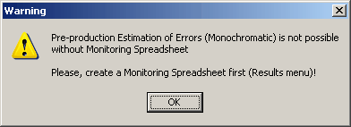
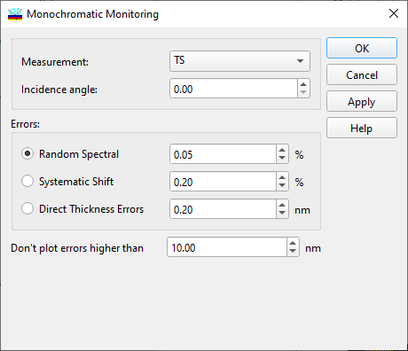
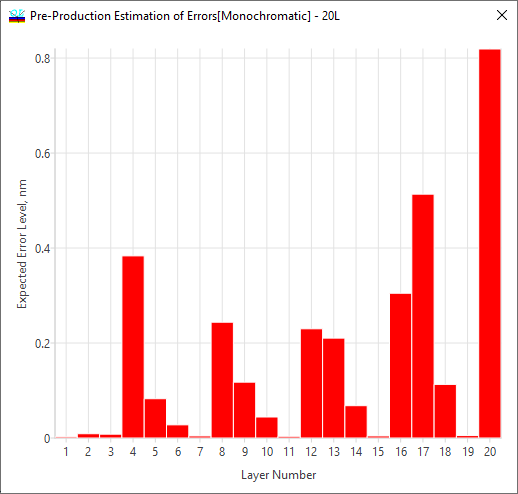

Pre-production Estimation of Errors - Monochromatic Monitoring
Pre-production Estimation of Errors - Monochromatic Monitoring
Main ideas of the option allowing to estimate the effect of error accumulation in the case of monochromatic monitoring were published in Applied Optics in 2006:
Main settings of the pre-production estimation of errors for the monochromatic monitoring case are entered in the setup dialog. Before using this option, you will need to create a monitoring spreadsheet, otherwise you will see the warning:

Results of pre-production estimation of errors in the monochromatic monitoring case are definitely dependent on the selected monitoring strategy.

It is necessary to specify what kind of errors are of interest.
Random errors (and their level in %)
Systematic shift (and the corresponding level in %)
Direct Thickness Errors (in nm)
In order to provide a properly scaled bar diagram, it is possible to indicate the truncation level for errors that are too high (“Don’t plot errors higher than”) in the entry field.


Note: Since 2014, multi-chip configurations (deposition strategies with multiple witness chips) are supported. The strategy should be specified in the OptiMonitor window.